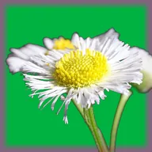

منظّف تسرب الكروما

يزيل الوهج الأخضر أو الأزرق الذي تتركه خلفية مفتاح الكروما قرب حواف الطبقة، مع الحفاظ على سطوع البكسلات.
الإعدادات
| الإعداد | النوع | النطاق | الافتراضي |
|---|---|---|---|
| قوة | رقم | من 0 إلى 1 | 0.5 |
| عرض الحافة | رقم | من 0 إلى 300 | 50 |
| لون التسرب | اختيار | تلقائي، أخضر، أزرق | تلقائي |